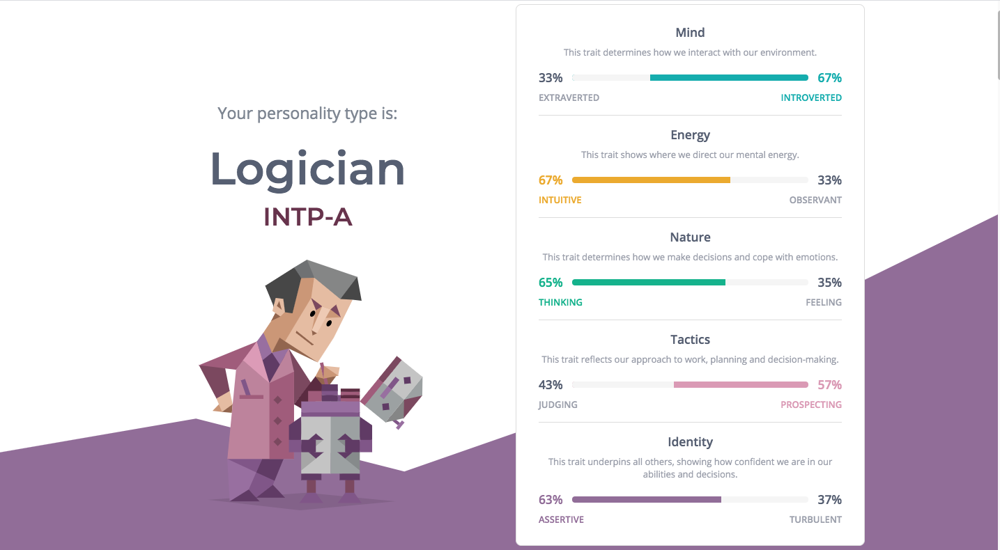

A difficult ethical decision to make...
An ethical decision I had to make was when I was
working at a call centre for an airline. As you'd know
from the past year, it has been very troubling
for travellers around the world and it was a situation where
the traveller needed to re-enter New Zealand as
soon as possible. Airlines were scrambling to create
company
policies to best assist travellers but due to delays I had to stick to the current airline policy for
ticket changes and
purchases. It was a matter of ethics
for me, even though I didn't have any power to go against the organization.
I chose the current policy and the
consequence of that was the traveller had to pay
for their own flight expenditure
without any sort of subsidy. Luckily we were allowed to apply policies
retrospectively so eventually the issue was
solved, but I sadly chose the other path...
How has my culture influenced my values and identity?
I am lucky enough to have grown up with two cultures at the same time. On one part, my family
is from South Korea but I was born in the beautiful land of
the long white cloud.The South Korean
values of hard work and determination has allowed me to focus in on the tasks I've carried out
throughout my life. The
New Zealand values of kindness, acceptance, and willpower have allowed
me to tackle many difficult situations in my life, giving me experiences I never would have had
otherwise.
Peronality Assessment:

Based on this assessment and my own evaluation, my strengths are determination, energy, and assertiveness.
INTP stands for Introvert, iNtuitive, Thinking, Perceiving and
represents individual's preferences in four
dimensions characterising personality type, according to Jung's and Briggs Myers' theories of personality type.
In terms of career development, they will enable to work hard, stay focused for a long time and also go for
what I think is worth my time.
In terms of my learning journey my strengths will help me push through the difficult parts of this course
with determination and energy. It will
be pretty interesting to see how my values and personality will
intersect with the obstacles of this course, but my guess is that I will push through those obstacles
with
brute force.
The times I'm reminded of where I tried to work productively and cooperatively with teammates but was
faced with tension, was during university. I overcame it the only
way I knew how, with brute force.
I ended up completing the assignment on my own, with very minimal contact with the team, other then
to get their signatures.